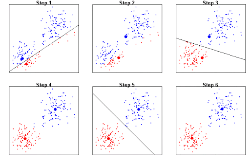
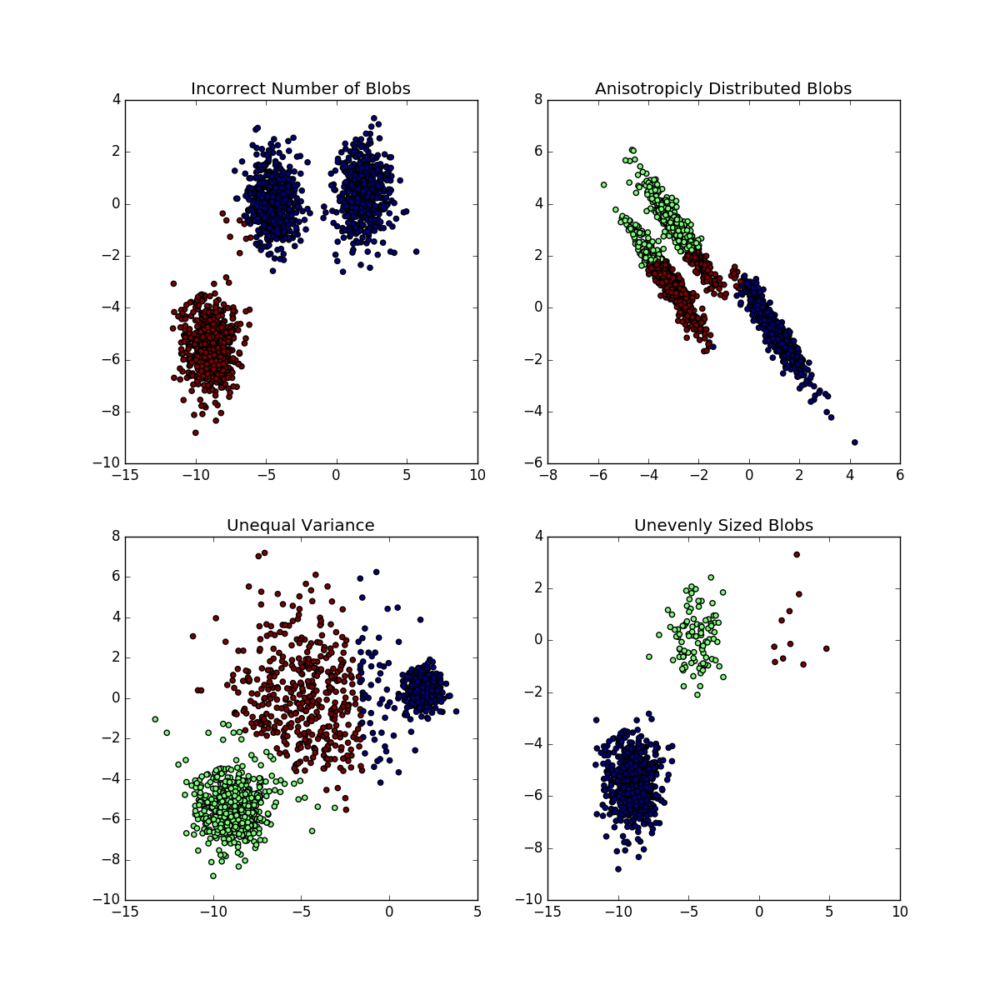
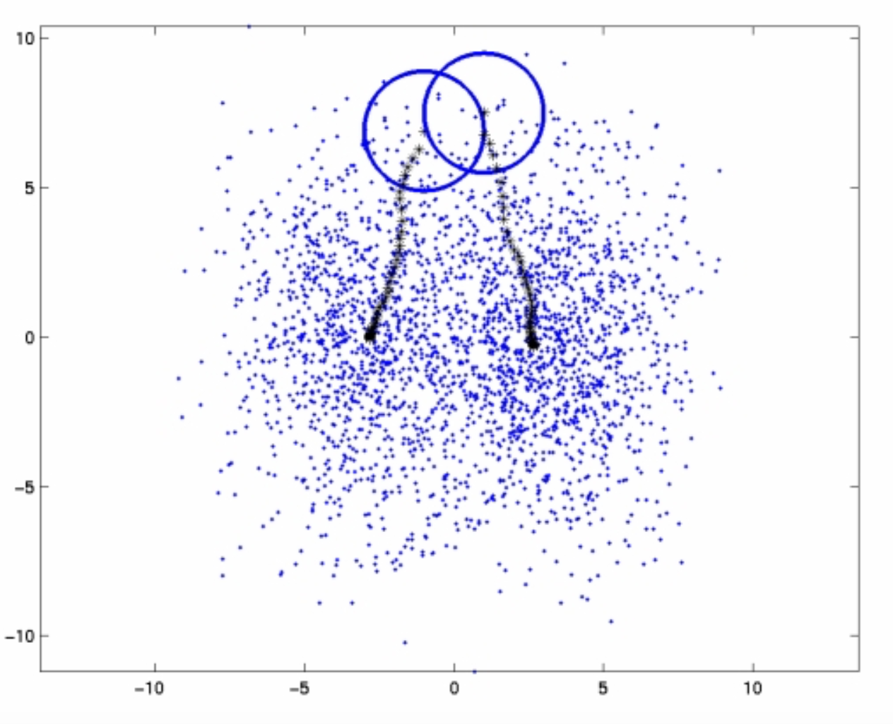
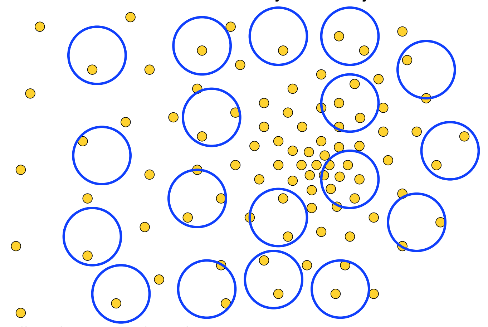
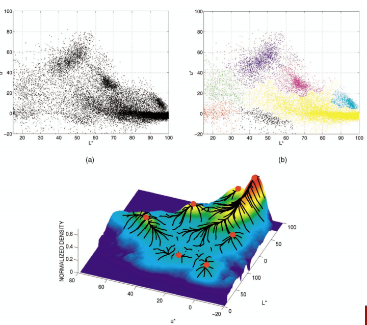
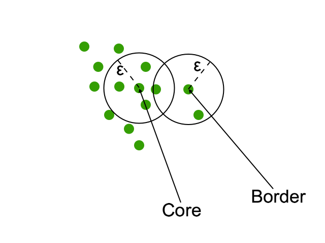
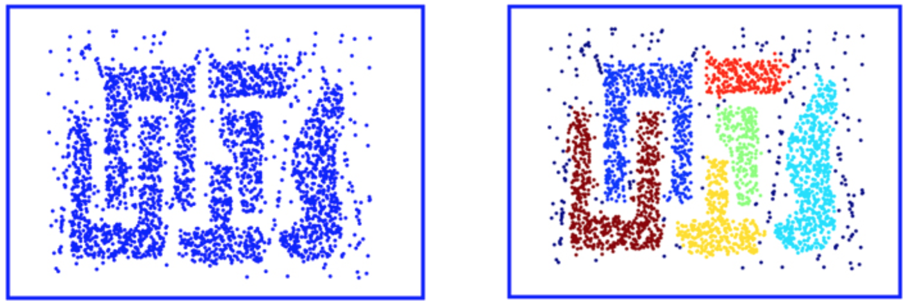
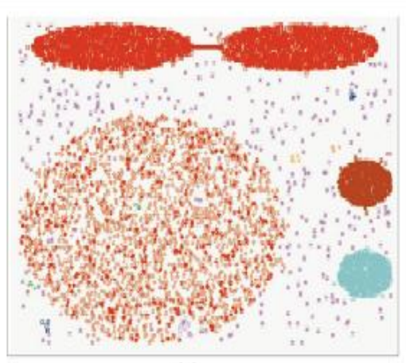
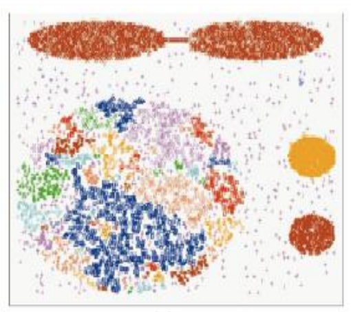
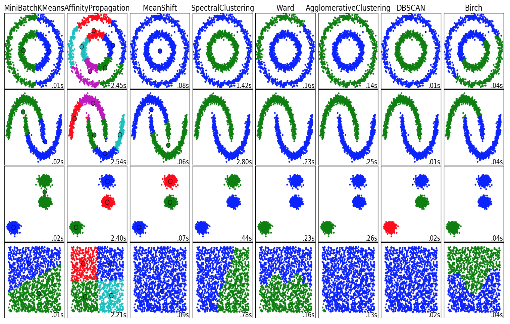

How can you cluster the dataset of the people that are sitting in this classroom right now?
Clustering is the process of partitioning a dataset into several subclasses such that the members of each sub class are similar. How we define what is similar?
Numbers do not posses those attributes
| Text | Numerical |
|---|---|
| Jaccard Similarity | Eucledian distance |
| Hamming distance | Manhattan distance |
| Levenshtein distance | |
| Cosine similarity |
def kmeans(k, dataset)
"""
:param k: The number of clusters in the dataset
:param dataset: The dataset to custer
:return: A list of labels
"""
centroids = [k points from the dataset]
converged = False
while not converged and shift > threshold:
for point in dataset:
point.label = min(distance from each centroid)
compute new mean and update centroids
if prev_mean - current_mean < threshold: #for each cluster
converged = True




epsilon \(({\varepsilon})\) – the maximum distance between two samples so they will be considered as connected
min_pts – the minimum number of core points in a cluster
Careful: DBSCAN is very sensitive to those parameters

DBSCAN define the notion of reahability:
def DBSCAN(dataset, min_pts, eps):
for p in dataset:
if not p.label:
if p.core_point():
classify all points density reachable from p
else:
p.label = noise


